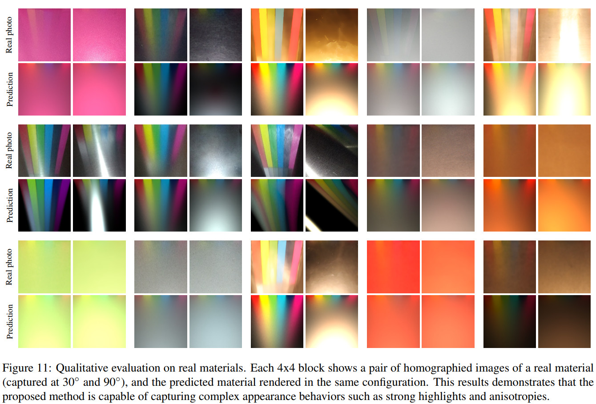

BRDF Estimation of Complex Materials with Nested Learning
Abstract
The estimation of the optical properties of a material from RGB-images is an important but extremely ill-posed problem in Computer Graphics. While recent works have successfully approached this problem even from just a single photograph, significant simplifications of the material model are assumed, limiting the usability of such methods. The detection of complex material properties such as anisotropy or Fresnel effect remains an unsolved challenge. We propose a novel method that predicts the model parameters of an artist-friendly, physically-based BRDF, from only two low-resolution shots of the material. Thanks to a novel combination of deep neural networks in a nested architecture, we are able to handle the ambiguities given by the nonorthogonality and non-convexity of the parameter space. To train the network, we generate a novel dataset of physically-based synthetic images. We prove that our model can recover new properties like anisotropy, index of refraction and a second reflectance color, for materials that have tinted specular reflections or whose albedo changes at glancing angles.
Downloads
Citation
@inproceedings{vidaurre_wacv2019,
author = "Vidaurre, Raquel and Casas, Dan and Garces, Elena and Lopez-Moreno, Jorge",
title = "BRDF Estimation of Complex Materials with Nested Learning",
booktitle = "IEEE Winter Conference on Applications of Computer Vision (WACV)",
year = "2019"
}
Results

Contact
Dan Casas
dan.casas@urjc.es